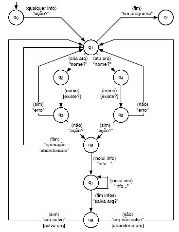

Máquina de Mealy
Uma máquina de Mealy M é um autômato finito determinístico com saídas associadas às transições. É representada por uma sêxtupla:
M = (Σ, Q, δ, q0, F,), onde:
O processamento de uma Máquina de Mealy para uma dada entrada w consiste na sucessiva aplicação da função programa para cada símbolo de w (da esquerda para a direita), até ocorrer uma condição de parada.
A palavra vazia como saída da função programa indica que nenhuma gravação é realizada e portanto a cabeça da fita de saída não se move.
Se todas as transições geram saída vazia, então a Máquina de Mealy se comporta como se fosse um autômato finito.
Exemplo: Máquina de Mealy
Representação de um diálogo entre o computador e seu usuário tratando algumas situações típicas que cria e atualiza arquivos.
Adotou-se a seguinte simbologia:
A máquina de Mealy M = (Σ, {q0, q1, ..., q8, qf}, δ, q0, {qf}, ) ilustrada na figura a seguir, onde Σ = e representam o conjunto de símbolos (palavras do português) válidos no diálogo.
